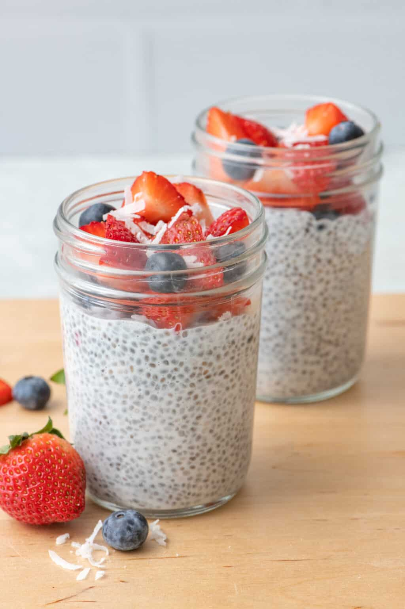

Chia Pudding

Description
Are you craving something light and healthy for breakfast? You will love this one!
It will give you much needed energy in the morning and will keep you satisfied for long.
Ingredients:
- 2 tablespoons chia seeds
- 1/2 cup almond milk
- 1 teaspoon honey
- Strawberries or other fruit for topping
Steps:
- Pour ingredients into a jar and mix well. Let settle for 2-3 minutes then mix again very well until you see no clumping.
- Cover the jar and store in fridge overnight or for at least 2 hours.
- When you’re ready to eat it, top with your favorite fruit.
ENJOY!